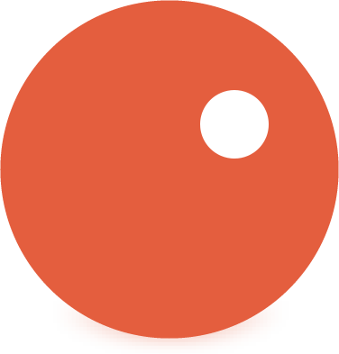

notoowNEON ZIGZAG0
코너에서 탭 · Space
notoow
NEON ZIGZAG
박자를 타고, 코너에서 탭.
클릭 · 터치 · Space / Z / X
빠른 구간은 양손으로 번갈아 누르세요.
내 최고 기록 0
잠깐 쉬어가기
돌아오면 이어서 플레이할 수 있어요.

notoow코너에서 탭 · Space
NEON ZIGZAG
박자를 타고, 코너에서 탭.
클릭 · 터치 · Space / Z / X
빠른 구간은 양손으로 번갈아 누르세요.
돌아오면 이어서 플레이할 수 있어요.